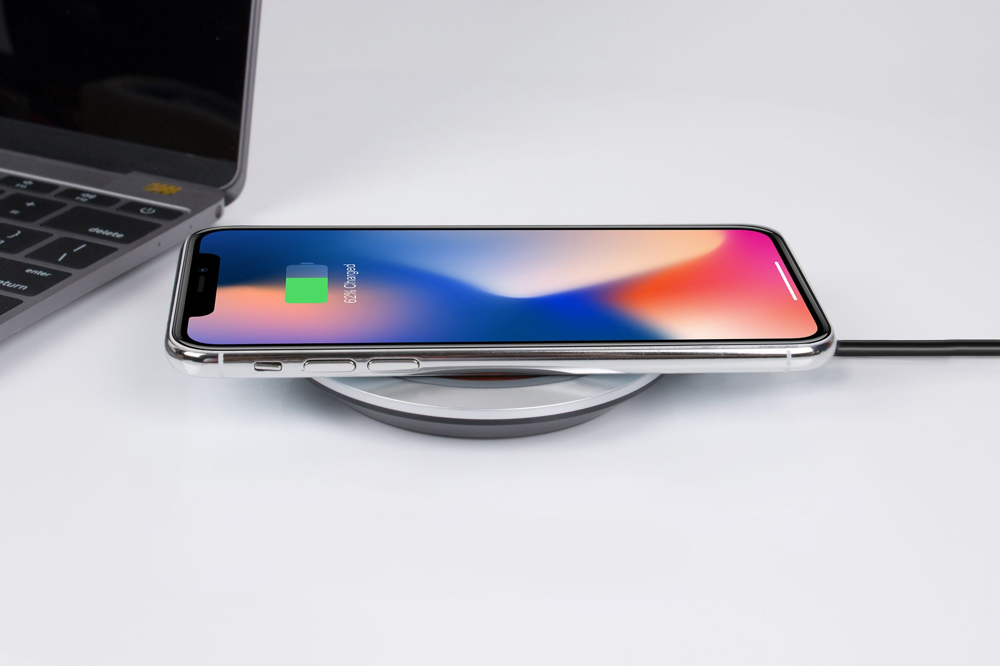

How to Make Your Phone Battery Last Longer
Most battery advice is folklore. These are the settings that genuinely make a difference, in order of impact — plus the popular tips you can safely ignore.

1. Turn down the screen (the biggest win)
- Lower screen brightness to the lowest level that is still comfortable, or turn on Adaptive brightness so the phone adjusts automatically.
- Shorten the screen timeout (Settings > Display > Sleep/Screen timeout) to 30 seconds or 1 minute. Every minute the screen stays lit while you aren't looking at it is wasted battery.
- If your phone offers a dark mode and has an OLED screen (most modern phones do), dark mode saves a noticeable amount of power, because black pixels on OLED use almost no energy.
2. Find the actual battery hogs
- Open Settings > Battery > Battery usage and look at which apps used the most power in the last 24 hours.
- For an app you barely use but which sits near the top, restrict its background activity: tap the app in the list and set Background usage to restricted, or turn off Background app refresh (iPhone: Settings > General > Background App Refresh).
- Don't restrict messaging, alarm, or navigation apps you rely on — restricted apps may deliver messages late.
3. Tame connectivity you aren't using
- Poor signal is a silent drain. When signal is weak, the phone boosts its radio power to stay connected. In a low-signal area, switching on Wi-Fi (if available) or aeroplane mode for a while saves more battery than any app tweak.
- Turn off Bluetooth and location when you genuinely don't need them — but note that modern Bluetooth Low Energy uses very little power, so this is a small win, not a big one.
- Turn off 5G only if your phone allows it and your 5G coverage is patchy; constant switching between 4G and 5G in a weak area costs power.
4. Use battery saver — before you're at 5%
Both Android and iPhone have a Battery Saver / Low Power Mode. It limits background activity, reduces visual effects, and sometimes lowers performance slightly. Turn it on when you know you'll be away from a charger for a long time, not only when the phone is nearly dead — it stretches the remaining charge much further that way.
5. Charging habits that protect battery health
- Avoid heat. Heat ages batteries faster than anything else in normal use. Don't leave the phone in direct sun, on a hot dashboard, or under a pillow while charging.
- Overnight charging is fine on modern phones — they stop charging at full and manage the rest. You don't need to unplug at exactly 100%.
- Use a decent charger and cable. Very cheap, uncertified chargers can deliver unstable power. You don't need the brand's own charger, but a certified one from a reputable maker is worth it.
- Don't worry about "memory effect." That applied to old nickel batteries, not modern lithium ones. Partial charges are perfectly fine.
Myths you can ignore
- Closing all apps constantly — modern systems freeze unused apps; reopening them costs more power than leaving them frozen.
- Task-killer apps — they fight the system's own power management and usually make things worse, plus they show ads.
- Calibrating the battery monthly by draining to zero — deep discharges actually stress lithium batteries. Avoid running to 0% regularly.
When the battery itself is the problem
If the phone dies quickly even with light use and all the settings above applied, check battery health: iPhone shows it under Settings > Battery > Battery Health; many Android phones show it under Settings > Battery or via the manufacturer's diagnostics. A battery below roughly 80% of its original capacity is significantly degraded. Replacing a battery is a repair-shop job — don't open the phone yourself, and don't use swollen batteries at all: if a battery is swelling, stop using the device and take it to a repair shop promptly.